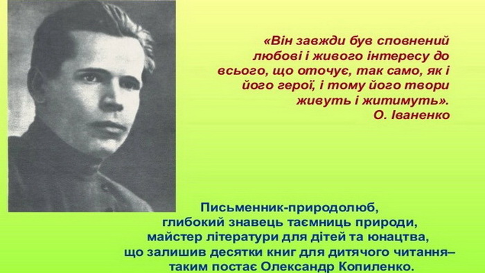
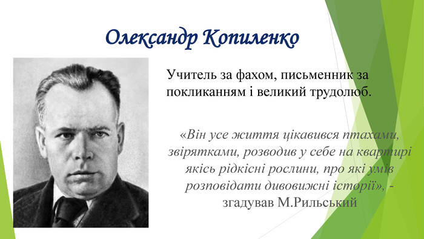

|  |  |
|
Народився письменник в Костянтинограді у родині залізничника у 1900 році, в будинку, який зберігся до нашого часу і розташований по вулиці Лермонтова. В Олександра Івановича було дуже багато захоплень. Він любив книгу і мав прекрасну бібліотеку, дивував істориків та ботаніків тим, як добре орієнтувався у їхніх науках, тонко розумів образотворче мистецтво, сам умів добре малювати. Проте всі захоплення служили одній меті – літературі, збагачуючи творчість письменника відчуттям повноти і змістовності життя, яким завжди відзначалися його книги. Саме тому вони були і залишаються популярними і в нас, і за кордоном. У нашому місті пройшло босоноге Сашкове дитинство, тут закінчив він школу та в 1920 році учительську семінарію. Потім склав іспити на біологічний факультет Харківського інституту народної освіти. З юних років О. Копиленко здружився ще з одним письменником - земляком Іваном Юхимовичем Сенченком. Але тоді, в роки юності, обидва ще не знали, що стануть майстрами пера. Майбутні письменники проводили своє дозвілля на берегах річки Берестової, любили мандрувати лісами, навчалися в м. Краснограді. Дружба між Копиленком та Сенченком продовжувалася все життя. Наша красноградська земля наділила Олександра Івановича наснагою та творчим горінням, любов'ю до природи, до людей, до життя горінням, любов'ю до природи, до людей, до життя. Перша книга Копиленка "Кара-Круча" вийшла 1923 року, більша збірка "Буйний хміль" з’явилася в друкованому у 1925. Саме ці книжки висунули письменника в перші лави молодої української літератури. За короткий проміжок часу вони перевидавалися кілька разів. Серед багатьох об’єктів уваги Олександра Копиленка є один, якому він залишається вірним протягом усього життя. Це – діти. Вперше у 1924 на сторінках журналу «Червоні квіти» він виступив з оповіданнями про дітей і для дітей: «Дитина», «Пригноблений», «Юрко». Перша його книжка для юних читачів «Сенчини пригоди» вийшла в 1928. Відтоді письменник до кінця своїх днів багато і натхненно писав для дітей і юнацтва, виявляючи у своїх творах неабиякий хист педагога. Дитячу книжку Олександр Іванович завжди розглядав як могутній засіб виховання. Твори для дітей Копиленко писав з такою ж вимогливістю, як і твори для дорослих. Але справжньою настільною книгою для молоді свого часу стали романи О.І. Копиленка «Дуже добре» і «Десятикласники». Популярність роману "Дуже добре" спонукала написати продовження його — роман "Десятикласники" (1938 р.). У всі періоди свого існування ці романи були настільною книгою у багатьох із молоді. У 1933 - 1939 роках Олександр Копиленко працював у редакціях дитячих журналів, а також у Комісії дитячої літератури з підготовки тематичних планів дитячого видавництва, яке було створене в Україні 1934 року. Копиленко пише про школу, дитячу дружбу, роль учителя у вихованні дітей – “Секрет”, “Воликове нещастя”, “Порізана парта”. У 1934 році він надрукував збірочку оповідань для малят “В лісі”, у якій були цікаві спостереження над природою, життям птахів та звірів. Відтоді до кінця свого життя він мовби дописував цю книгу. Нині вона добре відома юним та й дорослим читачам під назвою “Як вони поживають”, яка перевидавалася багато разів. У роки Другої світової війни Олександр Копиленко під час евакуації до Уфи працював в Інституті суспільних наук АН УРСР. З кінця 1943 О. Копиленко знову у Києві. Справжньою його творчою удачею у післявоєнні роки стали книжки оповідань для дітей «Хата хлопчика-мізинчика» та «Адмірал». 1948 вийшла збірка «Як вони поживають». Це своєрідна енциклопедія природи для молодших читачів. В останні роки життя О. Копиленко працював над романом про сучасну школу «Земля велика» (1957). А ще Олександр Іванович був людиною непосидючою, жадібною до всього нового: подорожей, знайомств, вражень. Він здійснює дві подорожі — до Середньої Азії та по Європі (Чехословаччина, Польща, Німеччина). Об'їздив усю Україну, бував у Грузії. Помер Олександр Копиленко 1 грудня 1958 р. в Києві. Похований на Байковому цвинтарі. У Києві на Байковому кладовищі височить пам'ятник, оспіваний поетами: "...Гойдається в зеленівулиця міста, А він де? Все тут же, все тут же, як завше Вкарбований профілем в сонячне місто, Чоло своє горде над каменем знявши ". Уривок із листа дружини письменника – Ц.Копиленко, надісланий 6.12.1959 р., через рік після смерті О.І.Копиленка: “Навіть не віриться, що промайнув уже рік. Таке відчуття, що ось-ось, хоч пізно вночі, подзвонить Саша у двері. І навіть на вулиці дуже часто, коли бачу чоловіка його зросту із закладеними за спину руками, так і хочеться його гукнути. 1 грудня були біля могили товариші по спілці поклали вінки і квіти, помовчали в скорботі і розійшлися...А о 14 годині відкривали меморіальну дошку на нашому будинку. Увечері в Будинку літераторів відбувся вечір, присвячений життєвому і творчому шляху Олександра Івановича...” Ім'я О. І. Копиленка занесено в енциклопедію світової літератури. Книги нашого земляка користуються великою популярністю не лише в нашій країні, а й далеко за її межами. Вони вчать молодь любити й шанувати природу, палко любити рідну землю і свій народ. Шанують пам'ять про великого земляка і красноградці. В Красноградському краєзнавчому музеї створений куточок, присвячений письменникові. Є особисті речі нашого земляка: стіл, настільна лампа, декоративні вироби з дерева та глини. Всі, хто був знайомий з Олександром Івановичем Копиленком, згадують , що спілкування з такою людиною було справжнім подарунком долі. Діє виставка творів О.І. Копиленка: повістей, оповідань. Серед них «Буйний хміль», «Народжується місто», «Десятикласники» та багато інших. Роман «Лейтенанти» має дарчий напис автора: «Красноградському музею, дорогим землякам від автора О.І. Копиленка. 29.09.52 р. До 70-річчя з дня народження відкрито меморіальну дошку на будинку, в якому народився і жив Олександр Іванович. В 2008 році на приміщенні ЗОШ №1 м.Краснограда відкрита меморіальна дошка на честь українського письменника Олександра Копиленка. Відкрив дошку гість – онук Олександр Любимович Копиленко. |
|